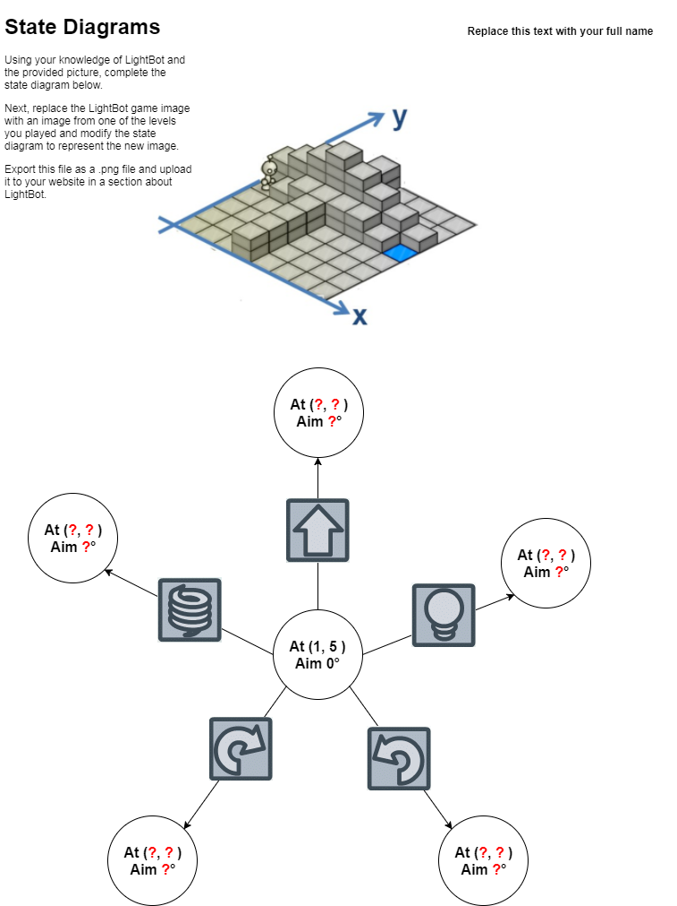

I agree with the statement, "Computing will transform society." Computing has been a part of our daily lives now. Today we use computers to store a million data or even more.I think that this way, we are able to store as much things we want into a computer rather than when we didn’t which saves space in real life. It can be used to store our pictures, music, and other documents. Computing also has revolutionized the way our society communicates. It made communication as quick as a second by sending an email to someone or talking to your relative from another country through skype, and many other ways to reach people quickly. Communications through computers are good and can be beneficial but it can also be not used correctly or can be taken advantage of. Since its very easy to text someone through your phone, you can get used to talking to them on your phone rather than in real life if you do it too much and get used to it. Computers are also used to help us with calculating math problems that may take a while and with computers, it can crack it for you in just seconds making things faster for us.
Course Website shortcutLightbot is a fun challenging game that makes you program a robot in a way where it is like a puzzle or a problem. This game is like a computer in a way because it has command keys such as jump, move forward, or rotate. In a computer the command keys represent the inputs of being put into a computer like a mouse, a hard drive, or a keyboard. Next, the responses that the robot make on the game after you've selected a command key will make the robot do it as a result. For example if you click move forward, you will see that the robot will move forward. In a computer this is called an output. When you use a mouse, you can see that the cursor on the screen is moving in response to your hand's motion on the mouse. However, the difference between Lightbot and a computer is that Lightbot is just a simple programming website where basic commands are given to the robot, whereas a computer on the other hand has a lot of commands that makes it possible to do a lot of things. A computer is a more complex version of Lightbot.
It is a good idea to write programs in small pieces and check how well they work after each piece is written because it saves you more time to look for your error in small pieces rather than you having to look on a long piece.
Solving math problems are one of the things in life that require you to figure things out. Programming is similar to math problem solving because at the end of your work or solution, you may not have it right and so you have to go back and check what you did wrong and if it is a short problem then it’s easier to find your mistake, but if it’s a complicated problem, then it takes a while and you will probably need someone to help you check it. The difference between programming and solving a math problem is that programming can have different ways to fix it while in math you have one direct way.
A dual-core computer can make it look and feel like it is running ten or more programs at once by solving parts of the problem of one then after that it moves on to the other part of a different problem it from there it alternates the parts from each problem and that’s what makes it seems like it’s running one or more problem at a time.